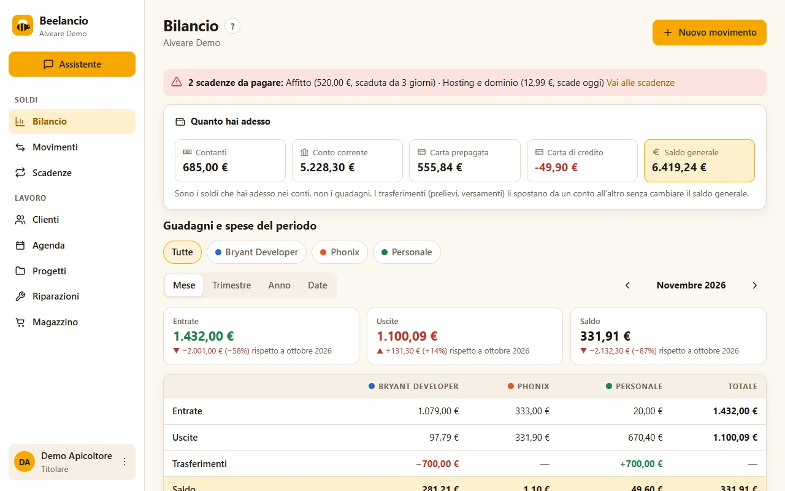
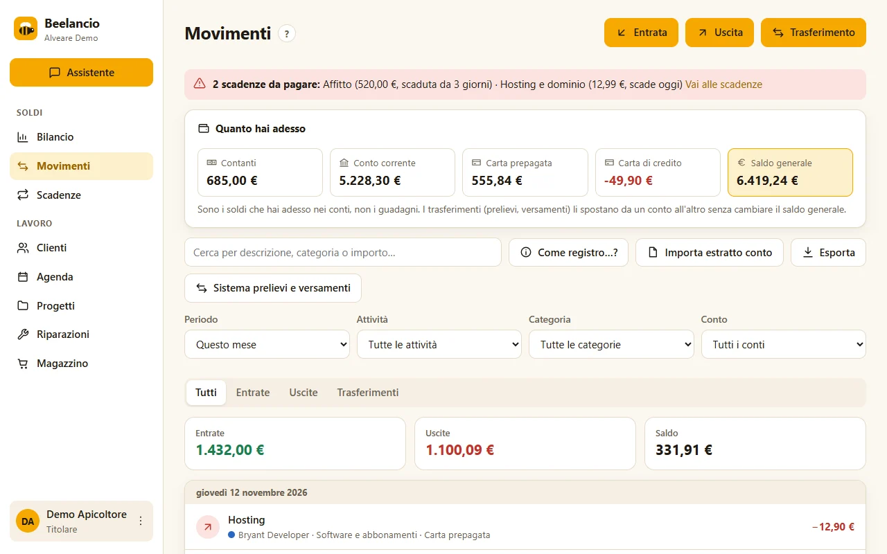
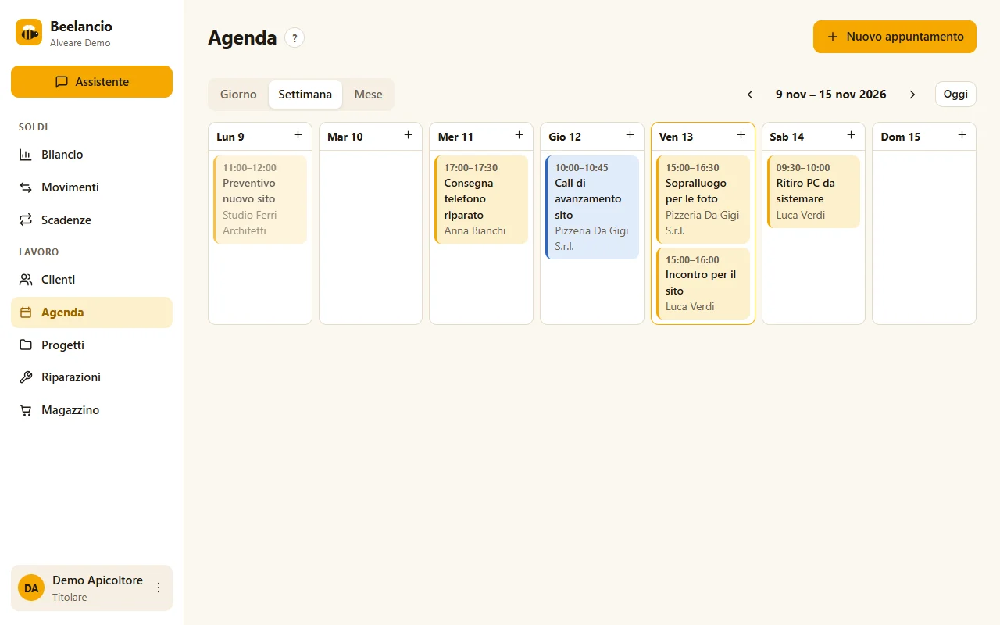
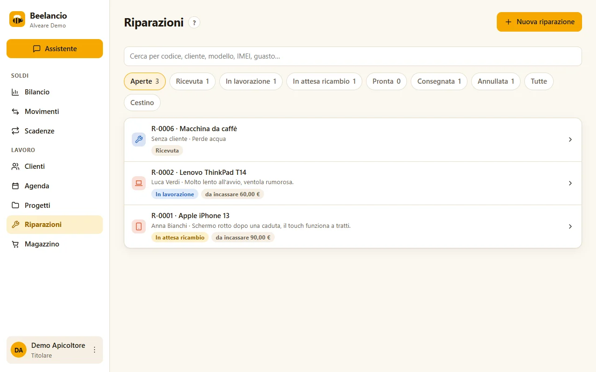
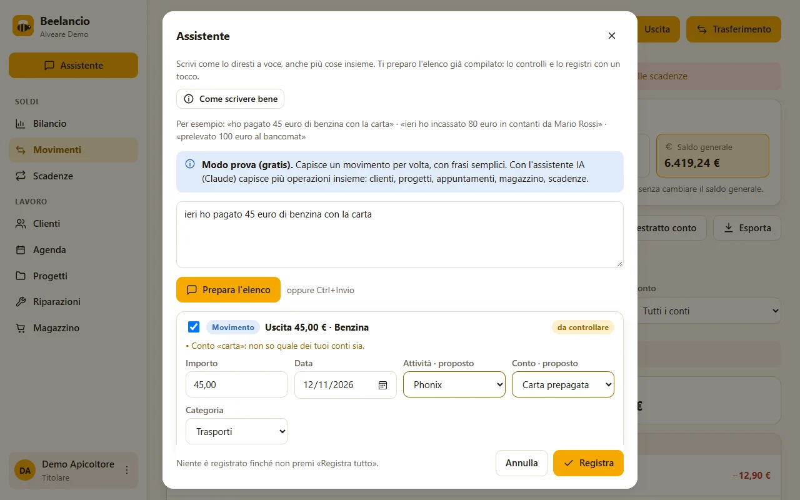
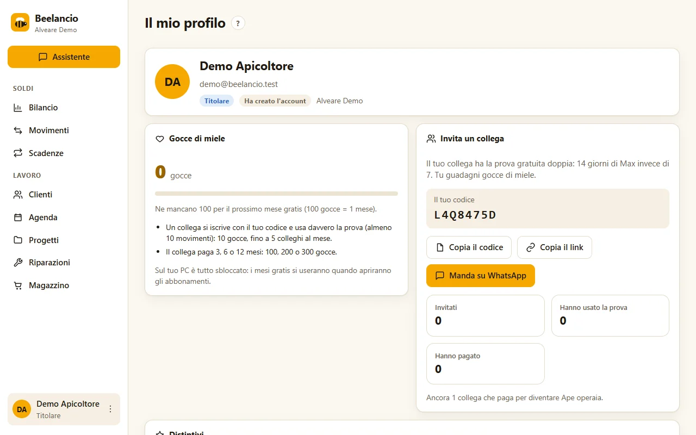

Tutto quello che puoi fare
Le sezioni di base ci sono sempre. Agenda, Progetti, Riparazioni e Magazzino si accendono solo se ti servono.
Bilancio
La pagina principale: quanto hai adesso e quanto hai guadagnato e speso.
- Saldo di ogni conto e saldo generale, con il saldo iniziale che decidi tu.
- Una colonna per ogni attività e il totale; spunti quelle che vuoi vedere.
- Mese, trimestre, anno o date libere, con il confronto con il periodo prima.
- Spese ed entrate divise per categoria.

Movimenti
Ogni soldo che entra, esce o cambia posto.
- Entrate, uscite e trasferimenti (prelievi, versamenti, ricariche, addebito della carta di credito, soldi tra un'attività e l'altra).
- Commissioni registrate insieme al trasferimento.
- «Come registro…?»: i casi di tutti i giorni con il modulo già pronto.
- Importazione dell'estratto conto della banca (file CSV), con anteprima e doppioni segnalati.
- Esportazione per Excel, da dare al commercialista.

Scadenze
Le spese e le entrate che si ripetono.
- Affitto, abbonamenti, bollette, canoni dei clienti: ogni mese, trimestre o anno.
- Promemoria in cima al bilancio quando si avvicina il giorno.
- «Pagata» registra il movimento e porta la scadenza al periodo dopo.
- Per le bollette l'importo si conferma ogni volta.
Clienti
- Persone e aziende con contatti, indirizzo, codice fiscale o partita IVA.
- Nella scheda: pagamenti, progetti, riparazioni e appuntamenti di quel cliente.
- Ricerca per nome, telefono, email o partita IVA.
Agenda facoltativo
- Appuntamenti in presenza o online, con luogo o link della chiamata.
- Viste giorno, settimana e mese.
- Collegati al cliente e al progetto.

Progetti facoltativo
- Lavori e commesse di ogni tipo; i tipi nuovi li aggiungi tu.
- Preventivo, acconto e saldo: vedi quanto hai incassato e quanto manca.
- Canone che si ripete (per esempio la manutenzione mensile), con il suo promemoria.
Riparazioni facoltativo
- Qualsiasi oggetto: telefoni, computer, elettrodomestici, biciclette, caldaie… o un tipo tuo.
- Stati dalla ricezione alla consegna, con lo storico.
- Acconti, saldi, ricambi e rimborsi collegati alla riparazione.
- Cestino per le riparazioni eliminate per errore.

Magazzino facoltativo
- Articoli con codice, costo, prezzo e scorta minima.
- Carichi, vendite, scarichi e inventario; mai sotto zero.
- Ricambi presi dal magazzino direttamente nelle riparazioni.
Collaboratori
- Aggiungi chi lavora con te, con la sua password.
- Scegli se vede tutte le attività o solo alcune: vedrà solo i dati di quelle.
Assistente IA Piano Max
Scrivi a parole che cosa è successo, anche più cose insieme: spese e incassi, clienti nuovi, appuntamenti, progetti, magazzino. L'assistente prepara l'elenco già compilato, con attività e categoria. Tu controlli e registri tutto con un tocco: senza conferma non scrive niente.

Portale clienti Piano Max
I tuoi clienti vedono lo stato delle loro pratiche e dei pagamenti, senza telefonarti.
- Un link personale per ogni cliente, da mandare su WhatsApp o per email: niente password da ricordare.
- Vede le sue riparazioni con lo stato e le date, i lavori, i prossimi appuntamenti, quanto ha pagato e quanto manca.
- Mai le tue note, i costi, i ricambi o altri clienti. Se serve, crei un link nuovo o lo disattivi con un tocco.
Sicurezza e i tuoi dati
- Entri con email oppure con un nome utente; sui tuoi dispositivi anche con un PIN di 6 cifre.
- Verifica in due passaggi gratis per tutti, con 10 codici di recupero.
- «Scarica tutti i miei dati» in un solo file, quando vuoi; e puoi chiudere l'account da solo.
Il tuo profilo
- Distintivi: i livelli dell'alveare e, per i primi 100 abbonati, «Ape fondatrice» con il tuo numero.
- Gocce di miele: inviti un collega con il tuo codice (anche su WhatsApp) e guadagni mesi gratis.
- Da qui raggiungi impostazioni, accesso e PIN, utenti e il cambio di utente.

Cosa Beelancio non fa
Per restare semplice, Beelancio non è un programma fiscale: niente fatture elettroniche, F24 o calcolo delle tasse. Per quelle parti continua a usare il tuo commercialista: con «Esporta» gli dai i movimenti in un file.